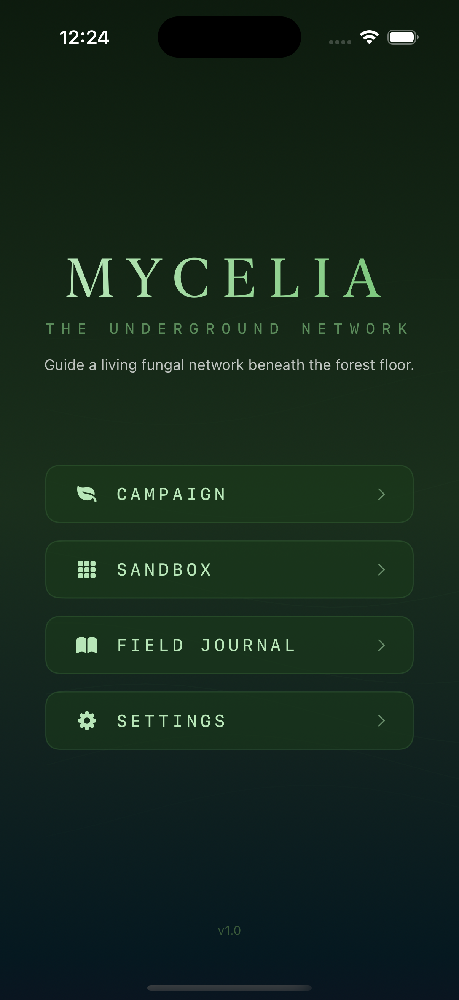
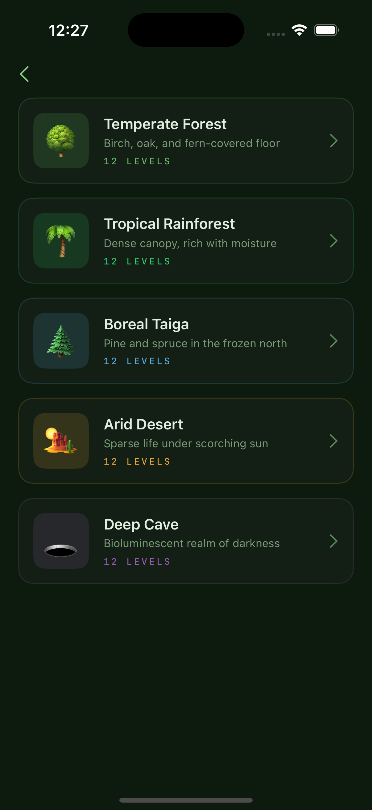
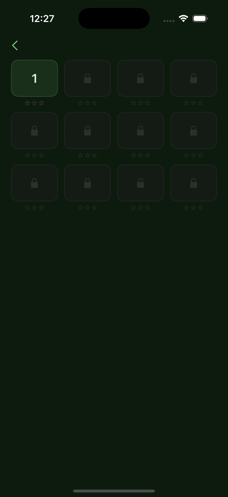
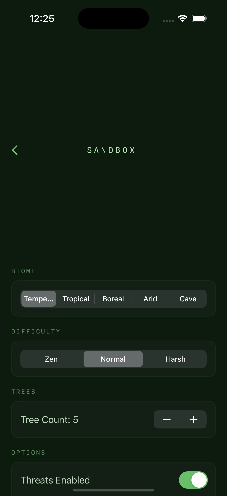
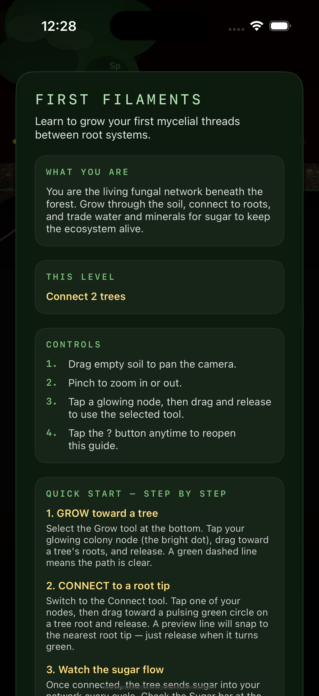

Guide a living fungal network beneath the forest floor. Grow, connect, and sustain an entire ecosystem — one thread at a time.
You are a living fungal network. Beneath the forest floor, everything is connected — trees trade sugar for minerals, water flows through underground channels, and mycelial threads weave it all together.
In Mycelia: The Underground Network, you grow hyphae through the soil, connect to tree roots, distribute nutrients, defend against threats, and fruit beautiful mushrooms — all grounded in real mycology science.
Part organic network-builder, part resource-flow puzzle, part ecosystem simulation. No ads, no in-app purchases — just pure, thoughtful gameplay.

Five core mechanics inspired by real fungal biology
Extend your mycelial network through the soil. Navigate obstacles, find resources, and reach tree root systems with exploratory hyphae.
Form mycorrhizal partnerships with trees. Tap into root tips and establish the symbiotic connections that keep the forest alive.
Move water, minerals, and sugar through your network using transport hyphae. Balance the needs of every tree in the ecosystem.
Protect your network from nematodes, competing fungi, and environmental threats. Deploy chemical defenses and structural barriers.
When conditions are right, produce fruiting bodies — mushrooms! Each of the 9 species has unique requirements and rewards.
Unlock entries in the Field Journal as you play. Learn real facts about the Wood Wide Web, decomposition, spore dispersal, and more.
Explore the underground world of Mycelia




Each biome brings unique species, resources, and challenges
Oak and beech woodlands with moderate rainfall. A balanced introduction to mycorrhizal networks.
Dense canopy, rapid decomposition, and fierce competition. Resources move fast — so must you.
Cold conifer forests with acidic soil. Slow growth, scarce nutrients, and seasonal frost.
Extreme heat and scarce water. Only the most adapted species survive beneath the sand.
No sunlight, no photosynthesis. Bioluminescence guides the way in the deepest fungal frontier.
Every mechanic is grounded in actual mycology
Trees share resources through fungal networks. Scientists call it the Wood Wide Web — in Mycelia, you build and manage it.
Real fungi trade phosphorus and water for carbon from tree roots. Every connection in the game mirrors this biological exchange.
Some fungi glow in the dark. In the Deep Cave biome, bioluminescent species light your path through total darkness.